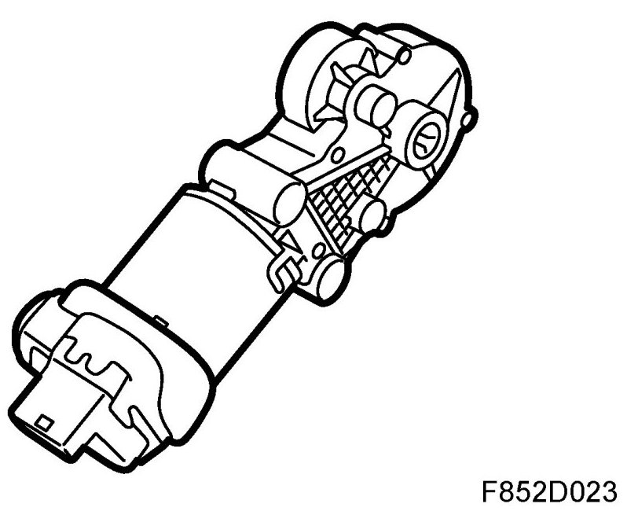
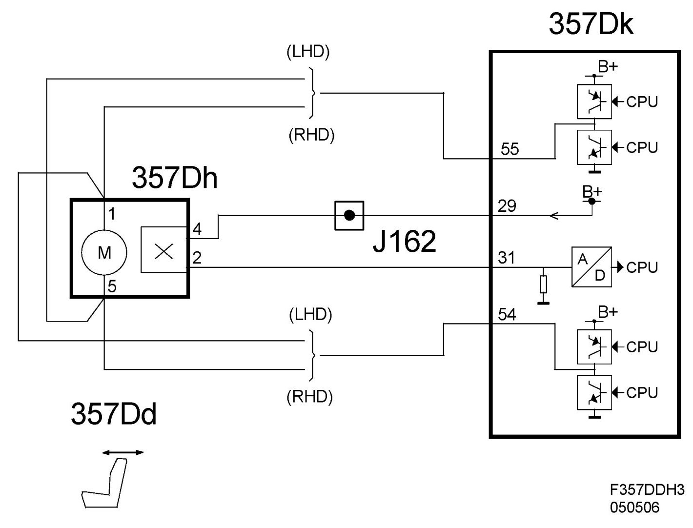
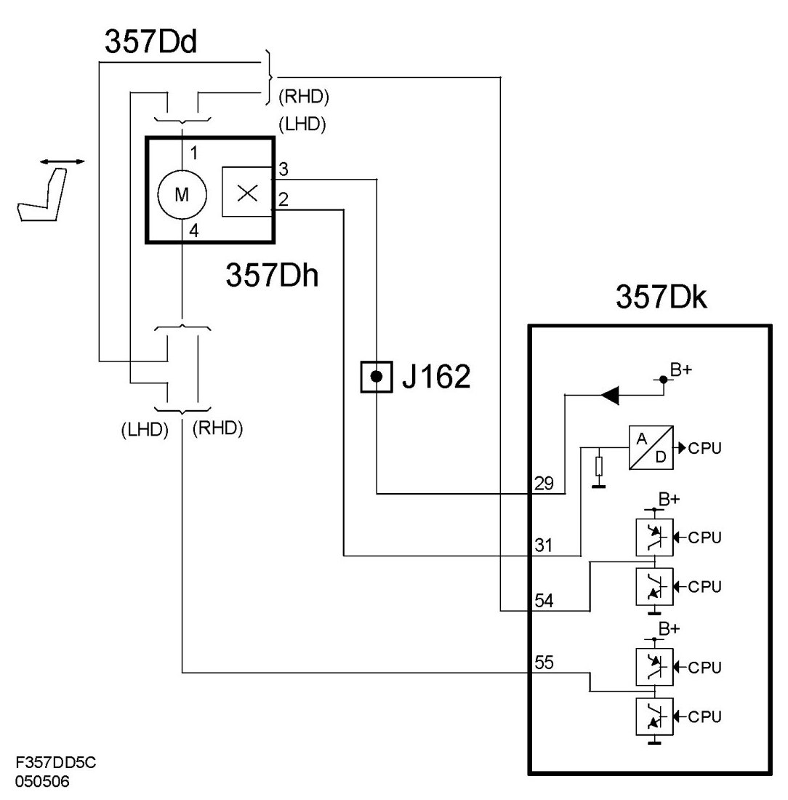

Motor, Backrest Adjustment, Electrically Operated Driver's Seat With Memory (357DD)
Motor, Backrest Adjustment, Electrically Operated Driver's Seat With Memory (357Dd)
Location
Motor, backrest adjustment, electrically operated driver's seat with memory (357Dd)

Main task
To change the angle of the backrest.
Type
DC motor that via a gear drives the mechanism that controls the reclining angle of the backrest.
Connect
The motor is connected to the seat control module (357Dk) pin 55 and 54. The information on the required seat length adjustment comes from the switch (357D) to the control module. The control module uses the information from the switch to supply power to and ground the motor. The outputs are pole-reversed to change the direction of rotation of the motor.
Diagram 4D/5D

Diagram CV
